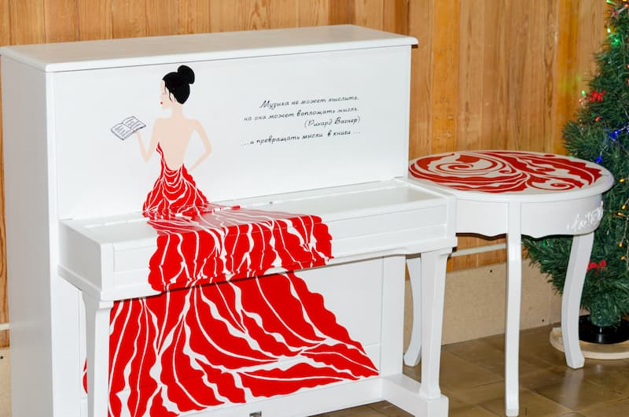

Декабрь 2025 года. В наш рабочий цех, помимо новых бумаг и красок, приехал особенный «сотрудник» — пианино. Мы заказывали его специально для себя, и над его дизайном хорошо поработали.
На нём написана цитата, которая нам очень близка: «Музыка не может мыслить, но она может воплощать мысль. (Рихард Вагнер) ... и превращать мысли в книги…». Рядом — рисунок женщины в красном платье, которая читает книгу. Для нас это не просто декор, а символ. Напоминание о том, что наши главные инструменты — это и машины, и человеческое вдохновение.
Зачем нам пианино в типографии? Всё просто. Мы хотим, чтобы перерыв был настоящим переключением. Чтобы можно было не только за чашкой кофе обсудить макет, но и на несколько минут отвлечься на живой звук. Кто-то вспомнит забытые мелодии, кто-то просто послушает. Мы уверены, что такие паузы помогают вернуться к работе со свежей головой и новыми силами.
И это только начало. Главные планы — на 2026 год.
Что планируем в 2026-м? Творческие вечера прямо в цехе
Мы решили, что такое пианино просто создано для того, чтобы собирать вокруг себя людей. Поэтому в следующем году запускаем серию небольших мероприятий. Будем приглашать интересных гостей прямо в пространство типографии.
Наша цель — создать здесь, среди печатных машин, место для живого общения о творчестве. Чтобы авторы и художники видели, где и как их идеи становятся реальными предметами.
Всё это мы можем позволить себе потому, что уверенно стоим на ногах как производство. Издательско-полиграфический комплекс «Лазурь» — это современное предприятие с полным циклом услуг.
Наша основная работа:
Мы любим свою работу и верим, что качественная полиграфия рождается там, где есть место не только технологиям, но и людям с их идеями. Поставленное в цеху пианино и планы на творческие вечера — это наше понимание правильной рабочей атмосферы.
Будем рады:
Пианино уже на месте. Планы на новый год — готовы. Добро пожаловать в ИПК «Лазурь»!